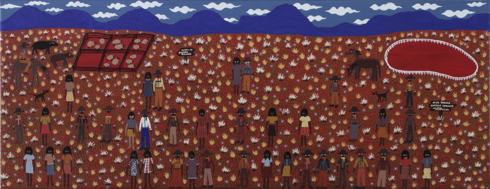

Bronwyn Raven Purrula
My name is Bronwyn Raven Purrula and I love to paint. I began painting professionally when I was living and working in Yulara and Mutitjulu in the Northern Territory in 1996. It wasn't until I met Malcolm Jagamarra that I really learnt my craft. Through his mentorship I returned to the desert and learnt to paint important traditional stories directly from my elders. I was born in Melbourne and grew up in Brisbane. I began my career as a model and travelled around the world studying performing arts. I moved to Alice Springs in 1991 and formed my own all female Aboriginal performing group called The Arrernte Desert Posse. I wrote a song called Angerwuy and it won three national songwriting competitions including the Triple J Unearthed 1995. Iworked for Imparja Television as a reporter and occasional newsreader. I have spent a lot of time at Uluru and Mutitjulu Community, teaching dance and singing to the children and working with Anangu Tours. When I began painting every day I sold my artworks to the Kata Tjuta Cultural Centre and Ayers Rock Resort, I have sold my paintings mostly in Melbourne. I painted Ravens and the Spirits and it won the Yulara Art Award. It was also selected for exhibition in the 1997 Telstra National Aboriginal Torres Strait Islander Art Award. I moved to Melbourne in 1999 to pursue a career in Dance, Art, and Music. When I returned to Mutitjulu for an extended break in 2008, l extended my knowledge of Tjukurpa. My style of painting changed and Ibegan producing more refined intricate work. My paintings are a tribute to my family who are traditional land owners in the Central Australian Desert. My paintings are an ancestral view of the desert habitats. I use ancient iconography in ochre and contemporary colours.
